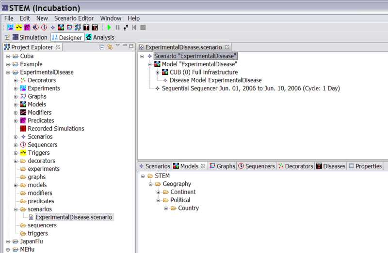

The New Infector Icon
click on the purple diamond icon to create new scenario
give it a name (you might want more than one so index it, for example, as "ExperimentalDisease1")
Fill in any Dublin core data you want to add
click finish
From the Project Explorer window, under Models, Drag the new model ("cuba.model") into the new Scenario in the Resource Set. Expand the scenario so you can see that it worked.
|
 |
|
Figure 1: A new Scenario in the Resource Set. The model has already been dragged into it. |
Your model is now part of your scenario but you are not finished
yet. Every scenario must also include a "sequencer" which basically is a clock
that
regulates time, and an "infector" which sets the initial infectious population.
If you ran a model for an infectious disease where nobody was infected anywhere
then
nothing would happen. Please follow the separate tutorials on "creating
a sequencer" and "creating and infector"
to learn more about how to create and customize
each of them. In the example below we will describe creation of a scenario using
a default sequencer but you can easily use your own custom sequence simply
by dragging that from your projects "sequencers" folder.
Add a sequencer to the Scenario
To add the system default sequencer to your model, go to Sequencers on the
bottom window - expand fully
drag "Sequential Sequencer 2006" into the Scenario in the Resource Set. Make
sure you have a properties Editor Window open
click on >Window>other>General>Properties to open the properties view. Open the
Disease in the Properties Editor – get ready to Create an Infector
Adding an Infector
See also the instructions for creating an
infector.
To create an infector you first need to make sure you know the exact ‘Disease
Name’ used when you created your disease.
To be sure check it as follows. In the Project Explorer, Under Decorators,
double click on ExperimentalDisease.standard
The new disease will be visible in the resource set. Expand the file node an you
should see “ExperimentalDisease model human”.
Click on “ExperimentalDisease Disease model human” In the bottom window click on
the properties tab to show the disease in the properties editor view.
Click on the new infector icon (black square with the health symbol and the
letter I)
|
|
|
The New Infector Icon |
Name it (e.g., "CubaInfector"), under DiseaseName: "ExperimentalDisease"
Under country select Cuba
Click on the Scenario to open it in the Resource set
drag the CubaInfector from Decorators into the scenario (open it to see it)
In the resource set click on the infector SI Infector ExperimentalDisease to
edit it. Your disease model may be SI, SIR, SIER, etc but in all cases you only
need an SI infector (as this base class will add infectious people to seed any
model.
click on the scenario, right click and run